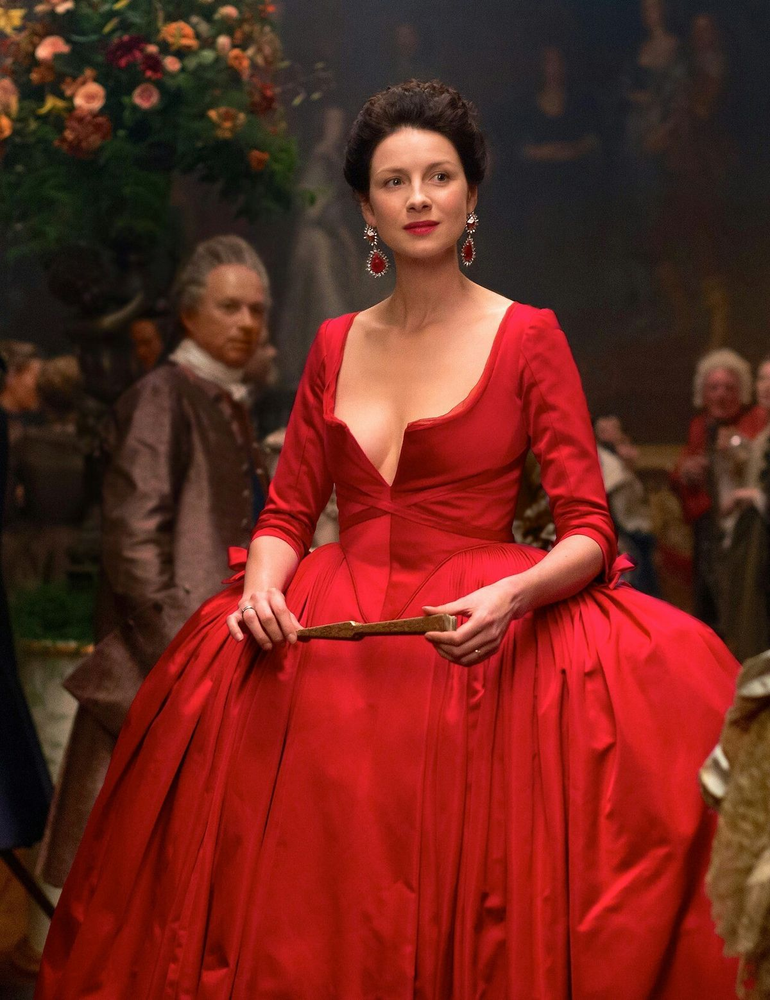
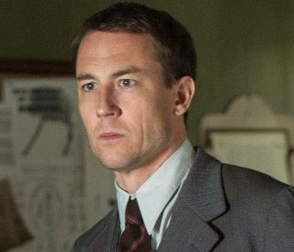
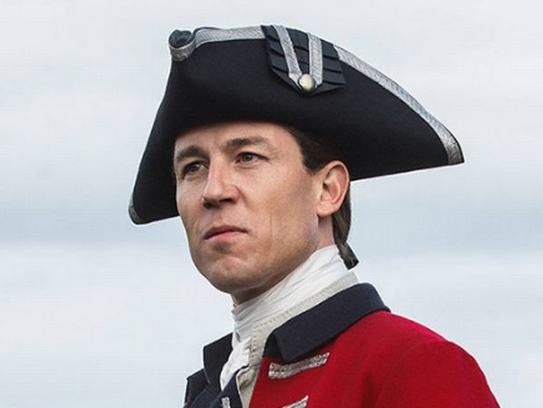
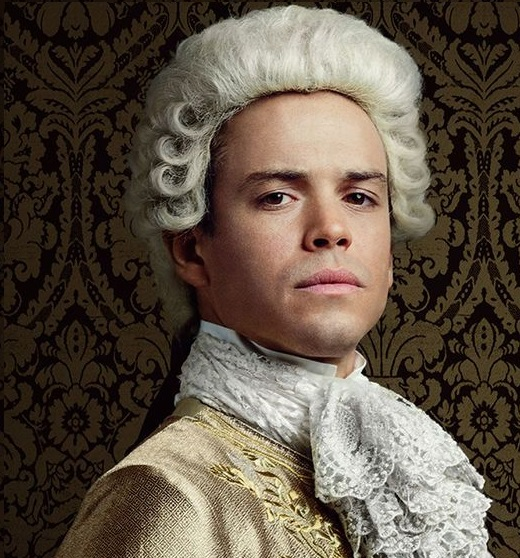
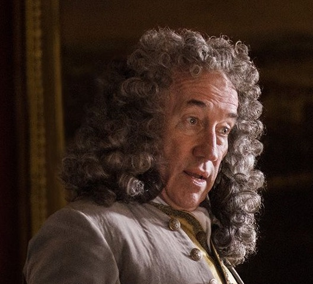
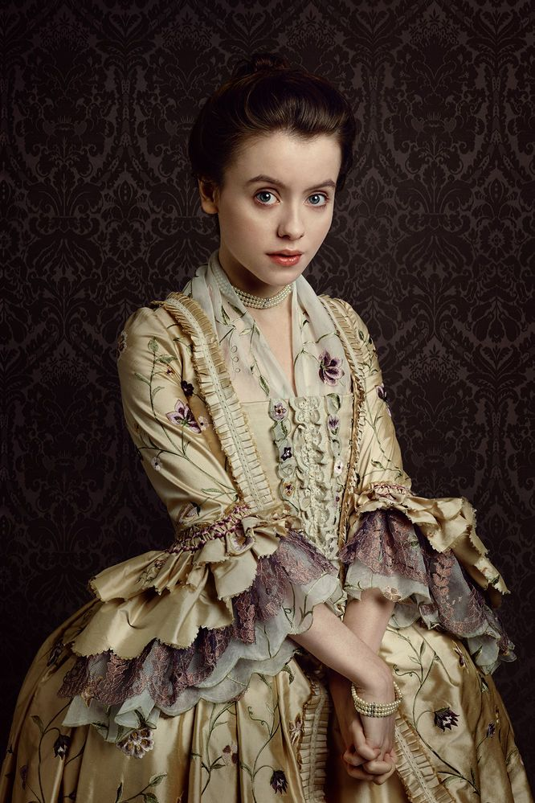
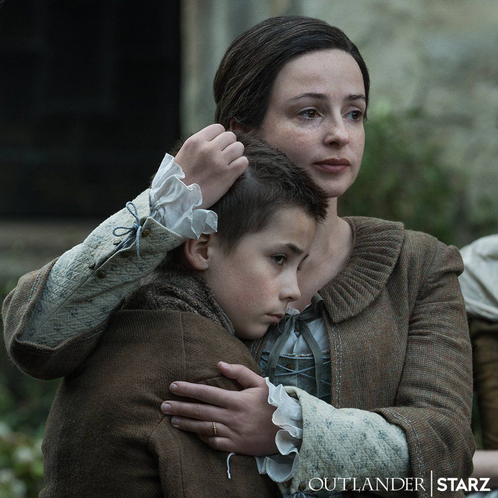
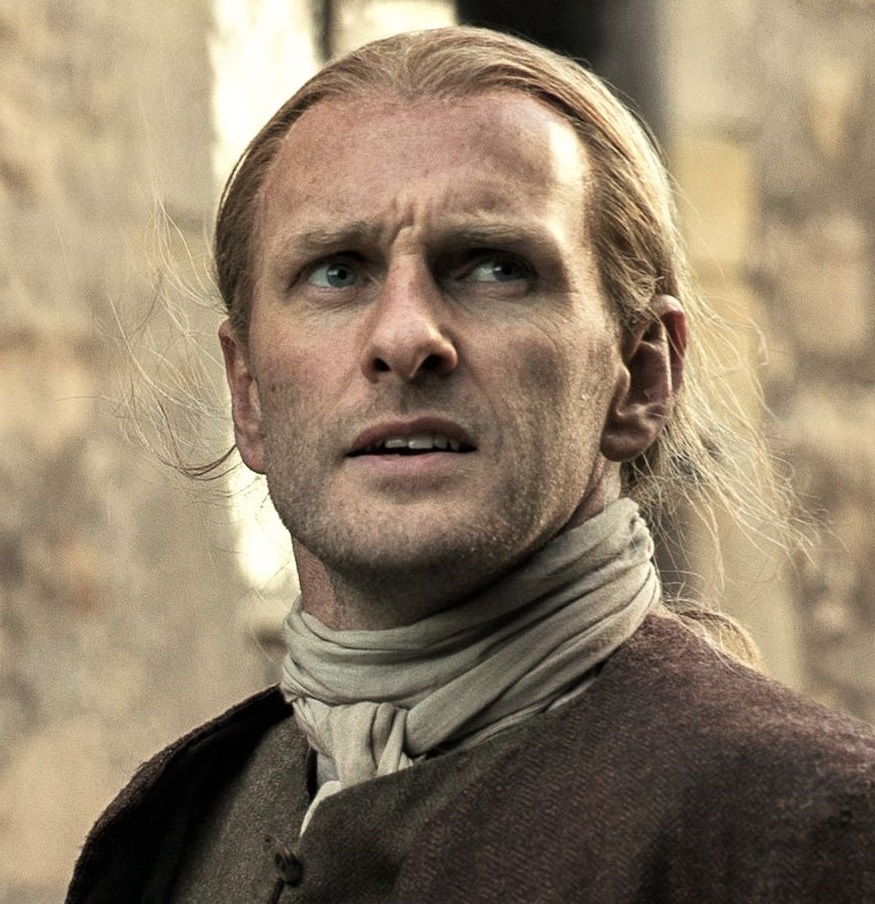

Claire et Jamie quittent l'Écosse pour la France, avec un objectif ambitieux : tenter de changer le cours de l’histoire afin d'empêcher un soulèvement désastreux. Ils s’intègrent à la cour royale de Paris, affrontent de nouveaux dangers politiques et personnels, tout en essayant de préserver leur amour au cœur d’un monde de trahisons, de complots et de tensions croissantes.
LES PERSONNAGES RECURRENTS

Claire Beauchamp Randall Fraser
"Sassenach", "La dame Blanche"
Guerisseuse
Après plusieurs semaines en mer, Claire et Jamie débarquent à Paris où ils s'engagent dans une mission délicate liée à la rébellion jacobite. Entre défis médicaux et secrets familiaux, Claire doit faire face à de nouvelles épreuves tout en protégeant ceux qu’elle aime.
James, Alexander Malcolm MacKenzie Fraser
"Jamie", "Red Jamie"
Highlander
Engagé dans une dangereuse mission à Paris, Jamie infiltre la cour du roi Louis XV pour tenter d’empêcher la rébellion jacobite. Son courage et sa détermination le portent face à des ennemis puissants, tout en protégeant sa famille et de garder ses convictions face à un avenir incertain.

Franck Randall
Historien - 1948
Frank Randall est confronté à la réapparition soudaine de Claire en 1948 et tente de comprendre ce mystère. Désemparé, il décide cependant de la croire lorsqu’elle lui révèle la vérité, mais l’annonce de sa grossesse le bouleverse profondément. Ils tentent alors de repartir sur de nouvelles bases.

Jonathan Randall
"Black Jack Randall"
Soldat britannique
Toujours une menace omniprésente, il revient dans la saison avec une aura sinistre. Son passé trouble et son obsession pour Jamie et Claire offrent une tension constante, et il incarne un ennemi redoutable à la fois dans le présent et le passé.
Murtagh Fitzgibbons Fraser
Highlander
Murtagh accompagne Jamie et Claire, où il a du mal à s’adapter aux intrigues de la cour, dans leurs efforts pour changer le cours de l’histoire. Loyal et protecteur, il joue un rôle crucial à chaque étape, malgré les défis et les dangers croissants.
Maître Raymond
Apothicaire
Maitre Raymond est un apothicaire parisien énigmatique. Intuitif et érudit, il développe un lien particulier avec Claire. Son savoir inhabituel et son aura mystérieuse en font un personnage fascinant, à la frontière entre science et spiritualité.
Compte de Saint-Germain
Parisien
Le comte de Saint-Germain, est un noble énigmatique et puissant à la cour de France. Il entre rapidement en conflit avec Claire, notamment à cause de ses intentions envers elle et ses méthodes manipulatrices.
Charles Edouard Stuart
"Bonnie Prince Charles"
Jacobite
Le prétendant jacobite au trône d’Angleterre, il symbolise l’espoir et l’ambition du soulèvement. Sa figure dans la saison incarne le rêve de restauration qui alimente la rébellion.

Louis XV
Roi de France
Louis XV est le roi de France ,mais souvent plus intéressé par ses plaisirs personnels et les affaires de cour que par la politique ou la guerre. Son règne est marqué par une certaine frivolité, et il influence le contexte politique et social dans lequel évoluent Claire et Jamie, notamment à Versailles.
Fergus
Servant
Ancien orphelin et fidèle compagnon de Jamie, Fergus commence à s’affirmer en tant que jeune homme capable de prendre des responsabilités. Sa loyauté et ses talents lui permettent de jouer un rôle crucial dans les plans de Jamie et Claire.

Le Duc de Sandringham
Duc britannique
Noble influent, il s’oppose à la révolte jacobite avec des ambitions politiques et personnelles. Son rôle dans les machinations de la cour de France en fait un personnage à la fois puissant et dangereux.
Alexander Randall
Britannique
Frère de Jack Randall, il est profondément impliqué dans les intrigues politiques et personnelles, notamment par sa relation avec Mary Hawkins. Fragile mais déterminé, il lutte pour sa survie tout en essayant de faire face à ses propres dilemmes.

Mary Hawkins
Britannique
Jeune femme aux fenêtres de sa vie, elle se retrouve au centre des intrigues familiales et politiques. Sa relation avec Jamie, Fergus et les autres évolue dans un contexte où sa sécurité est constamment menacée.

Jannet Fraser Murray
"Jenny"
Maitresse de Lallybroch
Sœur de Jamie, elle continue de soutenir sa famille avec force et compassion, incarnant la fidélité et la détermination dans cette période tumultueuse.

Ian Murray
Highlander
Ami fidèle de Jamie, il reste un soutien solide dans les moments difficiles. Son courage et sa loyauté en font un allié de confiance dans la lutte contre les forces opposées.